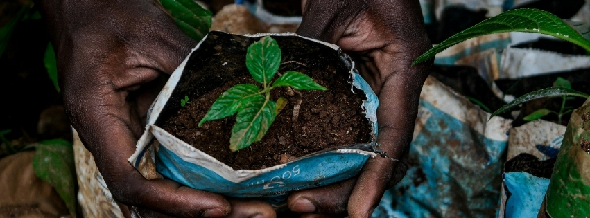
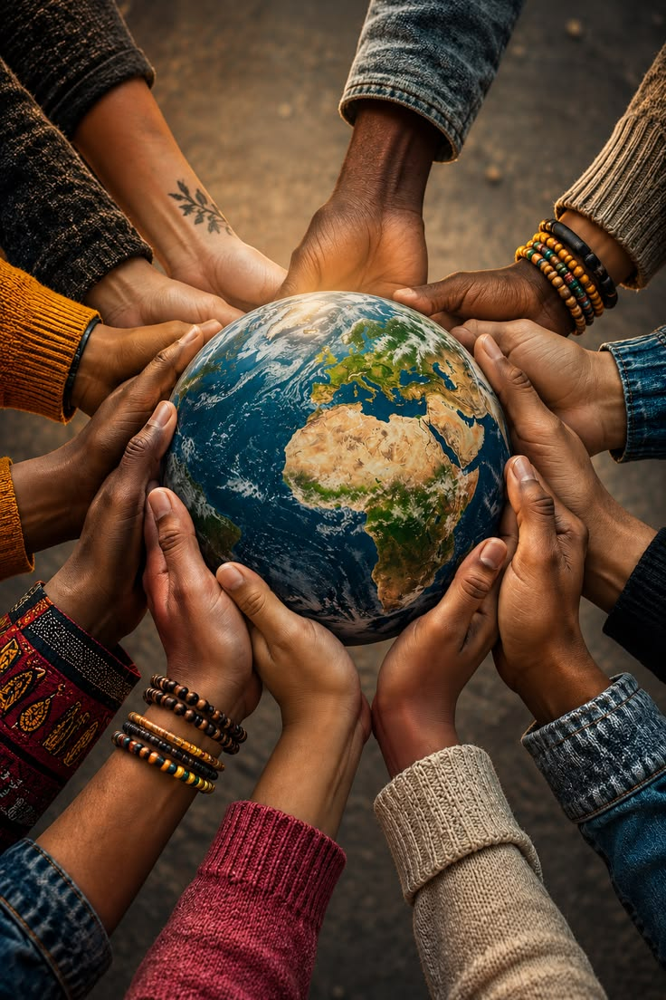

FOUNDATIONAL PILLAR
Good Governance & Accountability
Promoting civic education, transparency, responsive leadership, public participation, and community-led accountability.
Eagle Ecovision is dedicated to promoting environmental conservation, advocacy, good governance, sustainable development, and community empowerment across Kenya and East Africa.
Explore Programs Get InvolvedTo strengthen good governance and accountability through youth-led civic engagement and grassroots participation, advancing environmental conservation, education support, and community empowerment across Kisumu County.
A society where good governance and accountability lay the foundation for sustainable development, environmental stewardship, educational opportunity, and empowered communities.

Real stories of transformation, civic empowerment, and hope from communities across East Africa
Good governance and accountability form the foundation of Eagle Eco-Vision’s work. The other three focus areas translate accountable leadership and meaningful community participation into practical, lasting development outcomes.
Promoting civic education, transparency, responsive leadership, public participation, and community-led accountability.

Mobilizing communities, especially young people, to protect natural resources and adopt sustainable environmental practices.

Promoting equitable access to learning opportunities through educational support, mentorship, and initiatives that help learners overcome barriers.

Building the capacity of grassroots communities through youth leadership, skills development, inclusive participation, and locally led solutions.
"The programme was an Important learning experience for me. I learned that being a responsible Citizen Involves more than knowing my rights. It also means respecting the rights of Others, participating in community affairs and taking responsibility. The training Increased my awareness of the Importance of good governance, accountability and peaceful advocacy."
Student Participant, Kisumu CountyReal testimonials will be shared in due time from our engagement with the students.
Have a question, an idea or want to partner on advocacy and community initiatives? We would love to hear from you.
Contact UsGood Governance & AccountabilityEnvironmental ConservationEducation SupportCommunity Empowerment
WHAT THE COMMUNITY SAYS"Eagle Ecovision doesn't just give handouts—they empower us with knowledge, rights awareness, and skills that last a lifetime. Our community is thriving because of their holistic approach."
Your support helps us empower communities, promote good governance, protect the environment, and build a sustainable future for all.